Puppy or Bagel?
Justin Pearson
2016-03-12
Based on Tweets from https://twitter.com/teenybiscuit/media
Example
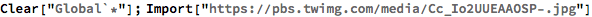
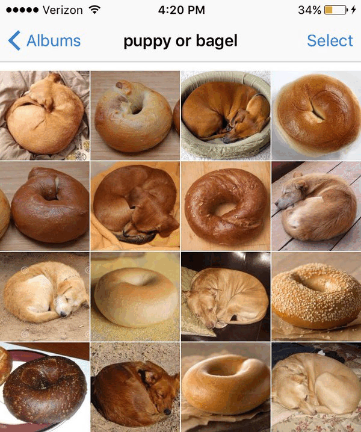
Can Mathematica tell the difference?
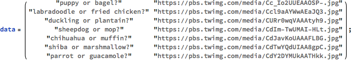


 |
| 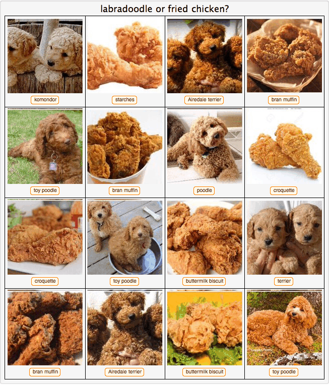 |
| 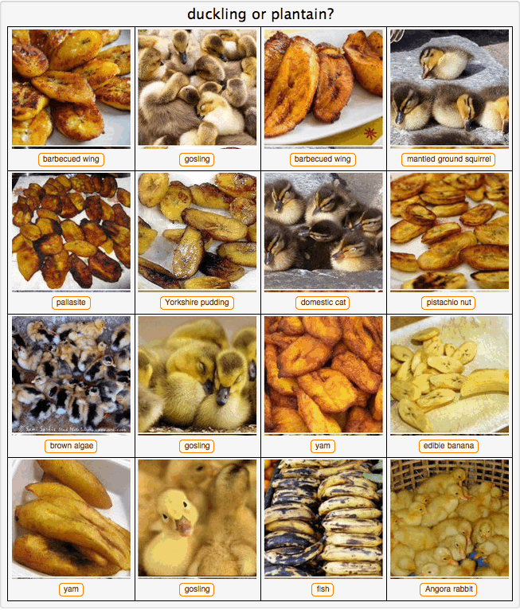 |
 |
 |
 |
| 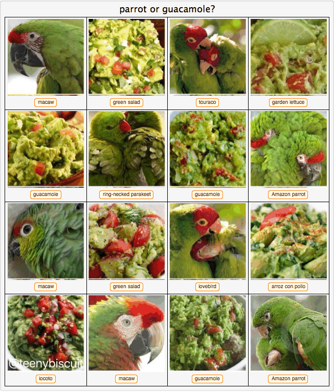 |
Note
Different versions of MMA perform differently. Here’s mine:


More informative labels
Sometimes MMA’s default identifications are quite specific. What the hell is a “komondor”? It can be nice to know the “genus” (broader concepts) of a label. Here’s a function for that.
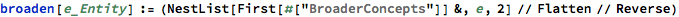

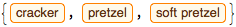
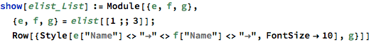


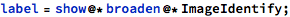
Now run it again.

| 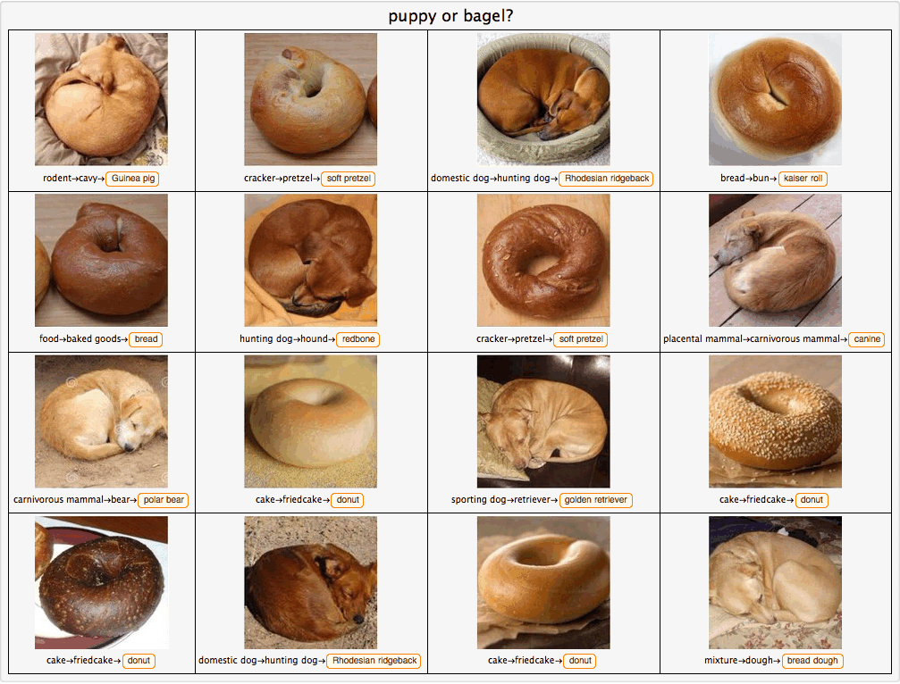 |
 |
 |
| 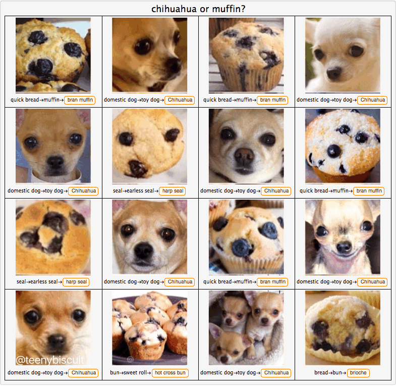 |
| 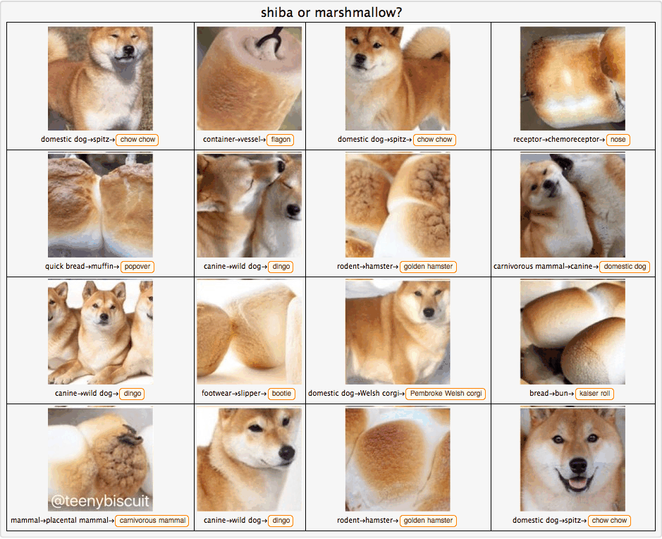 |
| 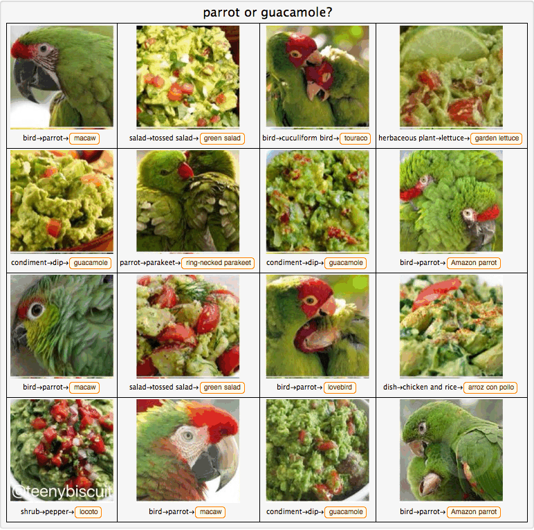 |
Future work: How to pick one of two options?
I want to restrict the identification to “puppy” or “bagel”. But it’s a pain to figure out how to say “bagel” in Mathematica.
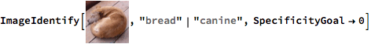


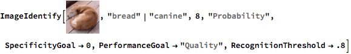
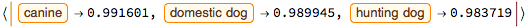